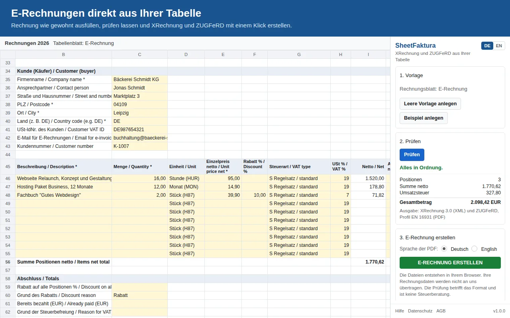

ZUGFeRD-Rechnung aus Google Sheets erstellen
Eine ZUGFeRD-Rechnung ist eine normale PDF, in die die Rechnungsdaten als XML eingebettet sind. Ihr Kunde kann sie wie gewohnt lesen, seine Buchhaltungssoftware liest die Daten automatisch aus. Mit SheetFaktura erstellen Sie sie direkt aus Ihrer Google-Tabelle, zusammen mit einer XRechnung.
Welches ZUGFeRD-Profil zählt?
Nach den Fragen und Antworten des Bundesfinanzministeriums gilt ZUGFeRD ab Version 2.0.1 als E-Rechnung, außer den Profilen MINIMUM und BASIC-WL. Diese beiden enthalten zu wenige Angaben. SheetFaktura erstellt deshalb immer das Profil EN 16931 (früher COMFORT). Tragen Sie eine Leitweg-ID ein, entsteht die Datei im Profil XRECHNUNG, das Behörden erwarten.
| Profil | E-Rechnung im Sinne des Gesetzes? |
|---|---|
| MINIMUM | nein |
| BASIC-WL | nein |
| BASIC | ja |
| EN 16931 (COMFORT) | ja, von SheetFaktura erstellt |
| EXTENDED | ja |
| XRECHNUNG | ja, von SheetFaktura erstellt, wenn eine Leitweg-ID eingetragen ist |
So geht es in Google Sheets
- Im Menü Erweiterungen auf SheetFaktura und Seitenleiste öffnen klicken.
- Leere Vorlage anlegen klicken und die gelben Felder ausfüllen.
- Prüfen klicken und die angezeigten Hinweise beheben.
- E-Rechnung erstellen klicken. Sie erhalten die ZUGFeRD-PDF und die XRechnung-XML.
Die ausführliche Anleitung mit allen Pflichtangaben steht hier: XRechnung in Google Sheets erstellen.

Rechnungsblatt mit Positionen; rechts die Seitenleiste mit Prüfung und Erstellung.
Technische Details
- PDF/A-3b mit eingebetteter XML in der CII-Syntax
- Profil EN 16931, mit Leitweg-ID Profil XRECHNUNG
- PDF auf Deutsch oder Englisch
- Vor jeder Veröffentlichung geprüft mit dem Validator Mustang (PDF/A und XML) und dem Prüfwerkzeug der KoSIT
Häufige Fragen
Ist ZUGFeRD dasselbe wie Factur-X?
Ja. ZUGFeRD 2 und das französische Factur-X sind technisch identisch.
Kann mein Kunde die Rechnung ohne besondere Software lesen?
Ja. Die Datei ist eine normale PDF. Buchhaltungssoftware liest zusätzlich die eingebettete XML aus.
Wann muss ich E-Rechnungen ausstellen?
Ab 2027 bei mehr als 800.000 Euro Vorjahresumsatz, ab 2028 für alle Unternehmen. Kleinunternehmer und Kleinbetragsrechnungen bis 250 Euro sind ausgenommen. Mehr: E-Rechnungspflicht 2025 bis 2028.
Im Google Workspace Marketplace installieren Mehr über SheetFaktura
SheetFaktura prüft das Format Ihrer Rechnung; es ersetzt keine Steuerberatung.